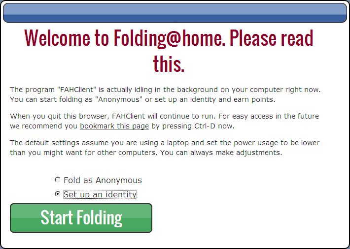
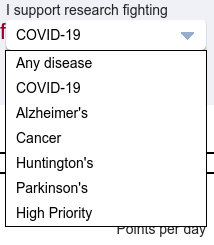
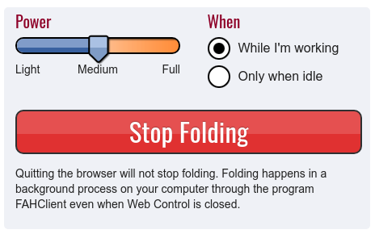

Folding@home is a distributed computing project, that very simply stated, studies protein folding and misfolding. Due to the coronavirus pandemic the project has focused priority on research specific to the coronavirus. Everyone with a computer can be a part of the research by downloading the FAHclient and contribute to research.
Quadrans KYC approved users that will join the Quadrans team (team number 245335) on Folding@home can earn additional Quadrans Tokens. The announcement is here.
This guide will explain how to partecipate as a member of the Quadrans team and how to receive your Tokens as a reward.
Download and install the latest FAH Installer for Windows version (32 and 64 bit) from the official download page.
The installer for Windows includes in one package:
FAHclient: the Folding@home core with the Web Control to configure it;
FAHcontrol: the GUI to configure the client with advanced options;
FAHviewer: a work unit viewer with different rendering options. the FAHclient, FAHcontrol and FAHviewer.
Follow the simple steps on the screen. For default settings click Yes, Next, I Agree, Next and Finish.
At the end of the process the FAH Web Control will open in your web browser and please follow the configuration instructions below.
Download and install the latest FAH Installer for Mac OS version (10.7+ 64 bit) from the official download page.
The installer for Mac includes in one package:
Follow the simple steps on the screen. For default settings click Continue, Continue, Agree, Continue and Install.
Download and install the latest FAHclient for your Linux distribution (64 bit only) from the official download page.
Alternatively, you can verify the availability in your Package Manager.
Linux version is available in a modular installation:
FAHclient (mandatory) is the Folding@home core with the Web Control to configure it;
FAHcontrol (optional) is the GUI to configure the client with advanced options;
FAHviewer (optional) is a work unit viewer with different rendering options.
At the end of the process verify from a Terminal window that the service is enabled and started.
sudo systemctl status foldingathome
If the foldingathome service is not Active start it.
sudo systemctl start foldingathome
A the end of the installation process, open your web browser and go to the Local Folding@home Web Control panel.
This will open a web page tha allows to setup your FAHclient.
On the Welcome to Folding@home screen please select Set up an identity before pressing the Start Folding button.
This is mandatory, Anonymous users will receive less units to work from Folding@home and will not be able to receive the additional Quadrans Tokens as reward for your partecipation.

Before proceding, register your name and e-mail to receive a Passkey from Folding@home.
For Quadrans team is mandatory that the Name is the Ethereum wallet address registered in the Quadrans KYC for the Airdrop. You can verify what is this address in the Quadrans Token Portal on the Settings page in the Account dropdown menu.
You will receive your Passkey in your mailbox.
To complete the setup in the Change Identity window please insert your Ethereum wallet address registered in the Quadrans KYC as Name, 245335 as Team Number and your Passkey.
Than click Save.
From the dropdown menu below I support research fighting you can select the specific research you want to contribute to.

Quadrans Team works for COVID-19 research.
Your Folding@home installations is ready to work together with all the users in the Quadrans Team.
The Power slider allows o select how much power of your computer will be used from Folding@home.

The slider has three positions for allocated power:
Light: CPU is Folding at half speed, GPU Folding is off.
Medium: CPU is Folding at three-quarter speed. GPU Folding is on. This is the default setting, and recommended for most users.
Full: CPU is Folding at full speed. GPU Folding is on. This is the most productive setting. Will cause fans to run faster and may produce more heat.
And two running options:
While I’m working: Folding is enabled to run at all times, based on the slider position.
Only when idle: Folding starts only when the system has not been used for several minutes.
As a thank you for your work Quadrans will recognize you 1.000 Quadrans Tokens every 1.400.000 credits on Folding@home work up to a maximum of 10.000 Quadrans Tokens (14.000.000 credits).
The reward will only be distributed to the wallets of Quadrans Airdrop registered users with approved KYC.